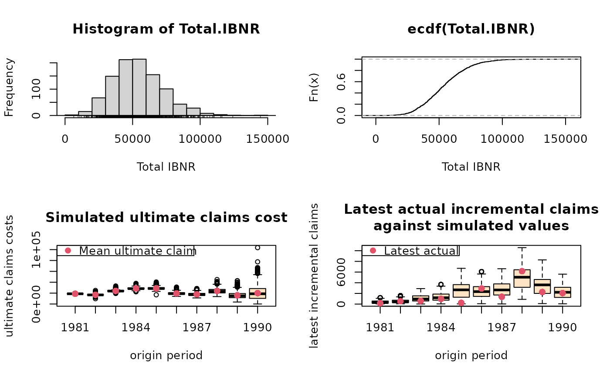

Plot method for a BootChainLadder object
plot.BootChainLadder.Rdplot.BootChainLadder, a method to plot the output of
BootChainLadder. It is designed to give a quick overview
of a BootChainLadder object and to check the model assumptions.
Usage
# S3 method for class 'BootChainLadder'
plot(x, mfrow=NULL, title=NULL, log=FALSE,
which=1:4, ...)Arguments
- x
output from
BootChainLadder- mfrow
see
par- title
see
title- log
logical. If
TRUEthe y-axes of the 'latest incremental actual vs. simulated' plot will be on a log-scale- which
if a subset of the plots is required, specify a subset of the numbers 1:4.
- ...
optional arguments. See
plot.defaultfor more details.
Details
plot.BootChainLadder shows four graphs, starting with a histogram
of the total simulated IBNRs over all origin periods, including a rug
plot; a plot of the empirical cumulative distribution of the total
IBNRs over all origin periods; a box-whisker plot of simulated ultimate
claims costs against origin periods; and a box-whisker plot of
simulated incremental claims cost for the latest available calendar period
against actual incremental claims of the same period. In the last plot
the simulated data should follow the same trend as the actual data,
otherwise the original data might have some intrinsic trends which are
not reflected in the model.
Note
The box-whisker plot of latest actual incremental claims against simulated claims follows is based on ideas from Barnett and Zehnwirth in: Barnett and Zehnwirth. The need for diagnostic assessment of bootstrap predictive models, Insureware technical report. 2007
See also
See also BootChainLadder
Examples
B <- BootChainLadder(RAA)
plot(B)

plot(B, log=TRUE)